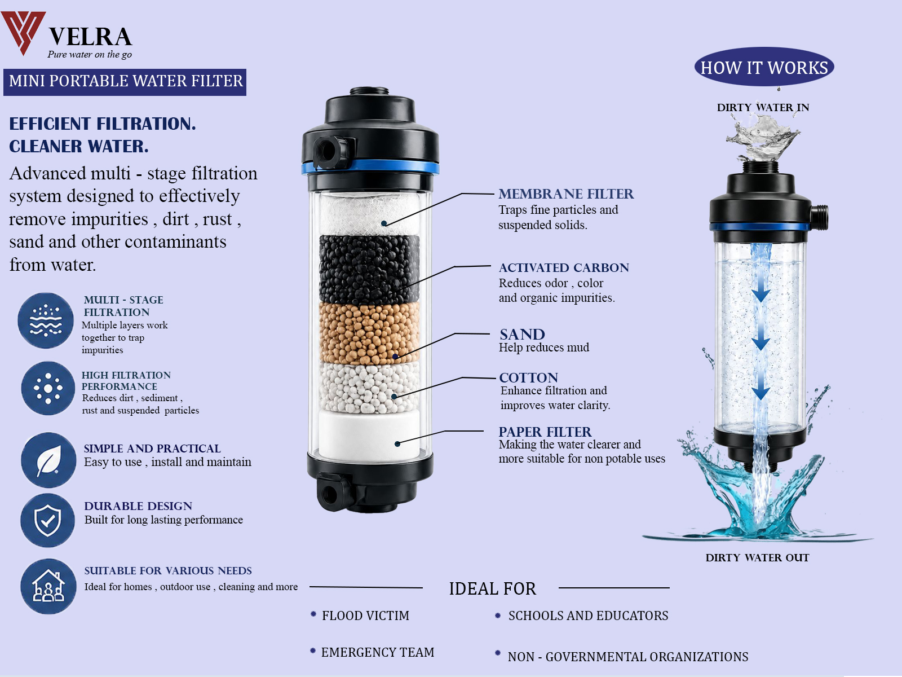

Meshy Water Filter is a company specializing in innovative water filtration solutions for residential, commercial, and industrial use. We strive to provide high-quality products that ensure every customer has access to clean water.
Our experienced team continuously develops sustainable technologies that improve water quality while protecting the environment for the future generations.
To become a trusted leader in providing innovative and sustainable water filtration solutions that improve the quality of life worldwide.
To deliver advanced water filtration technology and excellent customer service service and environmentally friendly products that ensure clean water for everyone.
Removes visible impurities such as mud, sediments, and debris.
Helps flood victims access cleaner water when the main supply is disrupted.
Raises awareness about water pollution and the importance of safe water treatment.